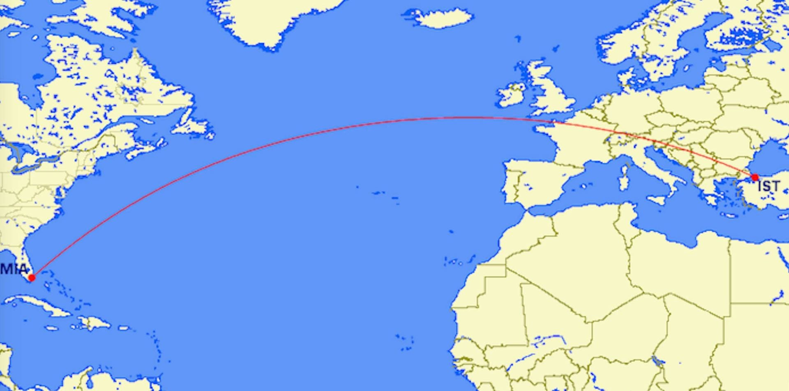

Çoğumuz ya internette ya da uçağa bindiklerinde ekranda gördükleri haritalarda uçağın haritaya göre doğrusal gitmediğini görmüştür. Aşağıda bunun niçin böyle olduğuna kısaca değineceğim, ekteki videoda da bu haritalarda iki nokta arasındaki en kısa mesafelerin nasıl gözüktüğünü görebilirsiniz.
Biz düz üç boyutlu bir uzayda yaşayan canlılar olduğumuz için dünyanın yüzeyini de üç boyutlu düz uzayımıza göre inceleyip ona göre doğru kavramını uygulamaya çalışıyoruz. Oysa dünyanın yüzeyi 2 boyutlu bir alandır, ve bu iki boyutlu yüzey bükümlü bir uzaydır. Bükümlü kelimesini anlamanın en kolay yolu sanırım şu: Bu 2 boyutlu yüzeye çizilen üçgenlerin alanları arttıkça iç açıları toplamı da artar!
Bizim üç boyutlu uzayımız düz olduğu için bu kavram bize saçma gelmektedir. Nitekim bizim uzayımızda bir üçgenin iç açıları toplamı her zaman 180 derecedir, alanıyla değişmez. Bu yüzden bize doğal gelen geometriyi de düz kağıt üzerinde çalışırız, düz kağıt da bükümlü olmayan bir yüzeydir. Eğer bizim üç boyutlu uzayımız da böyle bükümlü olsaydı, muhtemelen portakal üzerinde üçgen kare çizip geometri çalışmak düz kağıt üzerinde çizip çalışmaktan çok daha doğal gelirdi!
Dünyanın yüzeyinin bükümlü bizim haritalarımızın da bükümsüz olduğuna ikna olduktan sonra şu matematiksel sıkıntıyla karşılaşıyoruz: Bükümlü bir yüzeyi bükümsüz bir yüzeye birebir kopyalayamayız! Bu yüzden de dünyanın haritasını çıkarırken bazı teknikler geliştirmemiz ve işimize yarayacaklardan ona göre birini seçmemiz gerekir.
Bu yöntemlerden biri Merkatör projeksiyonudur. Bu projeksiyon özellikle tarihsel olarak önemlidir çünkü denizcilikte önemli olan "kerte hatları" bu haritalarda düz çizgilere karşılık gelmektedir.
Kerte hattından kastedilen şu: Eğer gemiye binip pusulada kuzey hep aynı yönde kalacak şekilde yol alırsanız, gittiğiniz yol bu haritalarda düz çizgilere karşılık gelmektedir! E haliyle de bu haritalar gemiciler için nimettir
Bu haritaların genel sıkıntısı alanların gerçek olmamasıdır. Ekvatordan uzaklaştıkça alanlar olduklarından çok daha büyük gözükür, öyle ki bir nokta olan kuzey ya da güney kutuplarını nokta olarak göstermek dahi mümkün değildir.
Peki bu haritalarda iki mesafe arasındaki en kısa yol nasıldır? Bunun kısa bir cevabı yok. Hesaplaması mümkün, ekteki videoda da farklı noktalar için bu en kısa yollar gösterilmiştir. Fakat detayına girmemize gerek yok, dünya üzerinde iki nokta arasındaki en kısa yolun geçtiği çizgilere "Büyük Daire" dendiğini bilmeniz fazlasıyla yeterli
Bu videodaki animasyon Mathematica’da hazırlanmıştır, ücretsiz olarak şuradan indirebilirsiniz:
http://demonstrations.wolfram.com/GreatCirclesOnMercatorsChart/?fbclid=IwAR1D3gnkZXLgwARS6AZDPaohWZ63WwwwB8R3PaLK1rCjsJ7HSZ6jimOTxN8.
